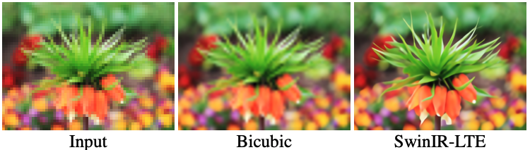
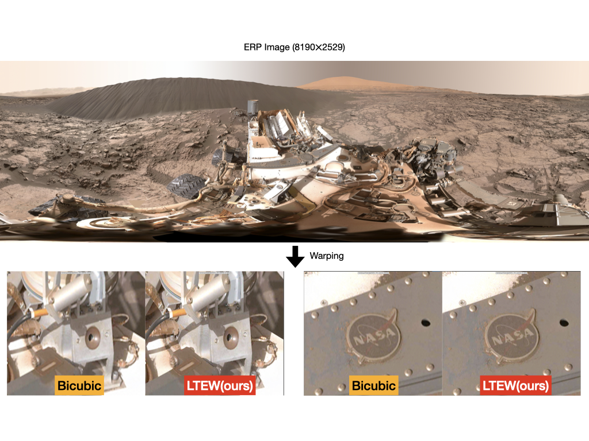
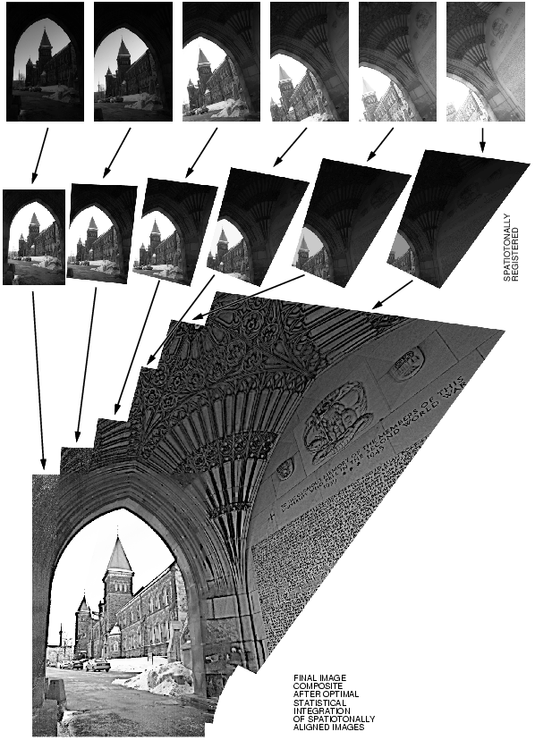
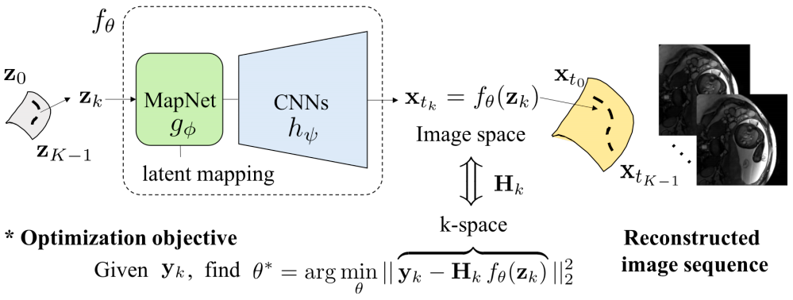

Research Area
Image Processing Algorithms for Inverse Problems
Single image super resolution with implicit neural representation
|  |
Recent works with an implicit neural function shed light on representing images in arbitrary resolution. Upon that, we propose a Local Texture Estimator (LTE), a dominant-frequency estimator for natural images, enabling an implicit function to capture fine details while reconstructing images in a continuous manner. When jointly trained with a deep super-resolution (SR) architecture, LTE is capable of characterizing image textures in 2D Fourier space.
figure from LTE_paper(CVPR2022), x32 upsampling using LTE
Image warping with implicit neural representation
|  |
We propose a local texture estimator for image warping (LTEW) followed by an implicit neural representation to deform images into continuous shapes. Local textures estimated from a deep super-resolution (SR) backbone are multiplied by locally-varying Jacobian matrices of a coordinate transformation to predict Fourier responses of a warped image. Our LTEW-based neural function outperforms existing warping methods for asymmetricscale SR and homography transform. Furthermore, our algorithm well generalizes arbitrary coordinate transformations, such as homography transform with a large magnification factor and equirectangular projection (ERP) perspective transform, which are not provided in training.
figure from LTEW_paper(ECCV2022), ERP to Perspective view using LTEW
Computational Photography
|  |
Camera is a complex system which has a lot of ill-posed inverse problems inside. Especially, many hand-crafted digital processing tasks -computational photography -such as demosaicking, denoising, auto-exposure, white-balance, HDR (high dynamic range scene), alignment, are handled in ISP (image signal processor). Nowadays, such signal processing in chips has transferred into neural-networks in academia and presented in many channels. We investigate conventional image processing in computational photography with deep neural networks.
figure from wikipedia
Image Enhancement - Decontouring, Lossless/Lossy Compression Artifact Removal
For image transferring or video streaming, compressed bitstreams are conveyed through communication's net. During compression of contents, several artifacts arose such as contouring, blocky artifacts, color inconsistency, quantization errors, etc. People are unpleasant to such artifacts, so we would like to suppress those artifacts with deterministic processing or learnable neural networks. Main difference of this task with previous inverse problems is that ground-truth is always accessible (very important for supervised learning) because compression techniques begin their processing from original contents.
Image dequantization/decontouring
ABCD : arbitrary bitwise coefficients for de-quantization (CVPR 23)
Signal Processing based on AI for Multi-channel/Multi-dimensional Data
|  |
We investigate a novel unsupervised/semi-supervised deep-learning-based algorithm to solve the inverse problem found in dynamic magnetic resonance imaging (MRI). Our method needs neither prior training nor additional data; in particular, it does not require either electrocardiogram or spokes-reordering in the context of cardiac images. It generalizes to sequences of images the recently introduced deep-image-prior approach. The essence of the proposed algorithm is to proceed in two steps to fit k-space synthetic measurements to sparsely acquired dynamic MRI data.
figure from Yoo, Jaejun, Jin, Kyong Hwan, et al. Time-Dependent Deep Image Prior for Dynamic MRI. arXiv preprint arXiv:1910.01684 (2019).
 Image Processing Algorithm Lab. (IPA)
Image Processing Algorithm Lab. (IPA) School of Electrical Engineering, College of Engineering, Korea University
Page generated 2024-06-28 15:28:29 KST, by jemdoc.